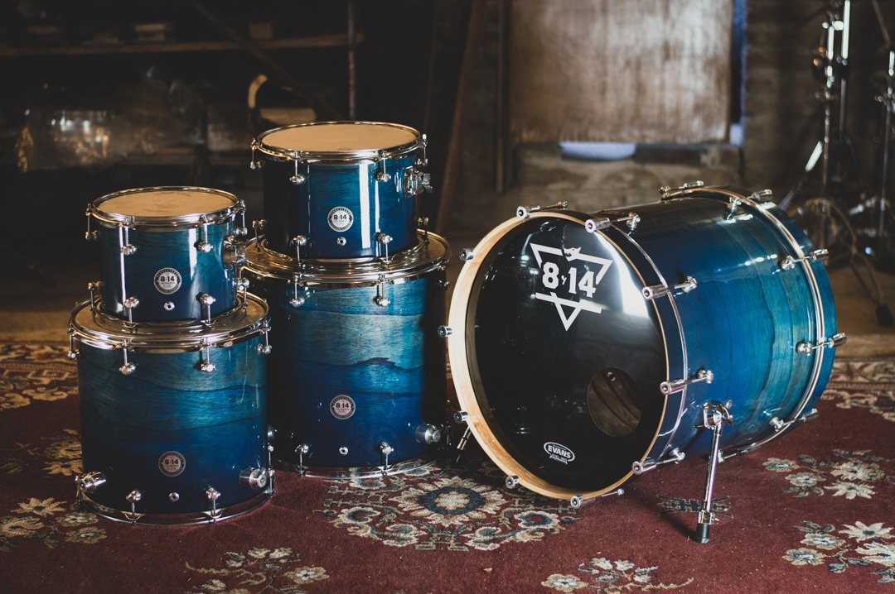

DAW
Como primera instancia necesitamos un DAW (digital audio workstation), lo que nos va a permitir trabajar con varias pistas en simultáneo, y siendo además, el software que se encarga de hacer manipulable la señal de audio que queramos ingresar al sistema.
Vander siempre usó Cubase, de la empresa Steinberg. En este apartado no hay diferencias entre sí, y podríamos usar cualquier otro como Pro Tools, Ableton o FL Studio, por dar algunos ejemplos. Simplemente es una cuestión de gustos, y quizás los comandos de teclas puedan ser más o menos cómodos, pero a efectos prácticos, todos cumplen la misma función.
Interfaz de Audio
Este es, quizás, el elemento más importante (y generalmente caro) de la cadena en sí. Es el elemento que se encarga de convertir un impulso físico en lenguaje binario, para que nuestro DAW lo interprete como un archivo de audio, propiamente. De su capacidad de procesamiento, su cantidad de canales disponibles y su transparencia depende su precio.
Nosotros optamos por emplear una Audient iD44, un excelente conversor, que por su precio, ofrece unas características excepcionales, entre las cuales pondera la capacidad de grabar simultáneamente hasta 20 canales por separado (ideal para una batería, donde es conveniente usar un canal para cada cuerpo de la misma).
Monitores

Como tercera instancia, llega otro de los apartados importantísimos de la producción en si: el monitoreo, o retorno.
Casi que se explica por sí solo, ya sea con auriculares como parlantes estéreo, gracias al monitoreo, vamos a poder escuchar cómo está sonando nuestra mezcla. De los monitores en sí, tenemos que apuntar a que sean lo más transparentes posible, es decir, que tengan la menor curva de ecualización posible, y de eso también depende su precio.
No está mal que la tengan (de hecho los monitores "perfectos" no existen. Hasta los más modernos y avanzados en cuanto a tecnología, siguen teniendo sus pequeñas curvas), siempre y cuando no sea lo suficientemente grande como para alterar nuestra audición respecto a lo que estamos escuchando. Recordá que una cosa es lo que se escucha dentro del estudio, y otra muy distinta es lo que va a escuchar el consumidor, que generalmente, lo hace desde su celular, auto, equipo de audio en casa, o desde su oficina, con unos parlantes genéricos, por lo que la mezcla tiene que estar lo más equilibrada posible, para que no haya sobresaltos de algunas frecuencias que puedan distorsionar la escucha en otros dispositivos.
Desde hace ya varios años, utilizamos los monitores KRK Rokit 7 para escucha espacial, y los Shure SRH 1840 para no molestar a los vecinos.
Micrófono
En este apartado, puede ser custionable la elección, pero como dice el dicho: "si parece estúpido, pero funciona, no es estúpido". Tanto para voces, coros como alguna que otra toma aerea de baterías y guitarras, usamos el Shure SM7B, un micrófono condensador que, por su historia (se hizo mítico por ser la preferencia para grabar las voces de Michael Jackson en el disco "Thriller") y su versatilidad, se nos hizo una rápida opción viable. Su curva es bastante plana, y si bien su impedancia es alta, la interfaz de audio lo tolera, y no hay ruido indeseado (el famoso "zumbido" que genera la corriente eléctrica circulando entre los componentes). Ideal para las voces de Barbi ¡10/10 recomendado!
Guitarra
Acá escribe un Feiser nostálgico que, desde el año 2011 no se puede desprender de su amada Epiphone EM-2 Custom, una guitarra que gracias a sus pastillas activas, tiene una ganancia extra que produce una distorsión natural y "crispy". Con 24 trastes, un trémolo que no desafina nunca, locking tuners, y un cuerpo/mástil esbelto, la hacen súper cómoda para grabar sentado, así como liviana para tenerla sujeta estando de pie. ¡11/10 recomendada!
Bajo
Si hablamos de eficiencia, tenemos que hablar de Nico y su Fender Jazz Bass
No se dejen engañar por su apariencia sobria. Este bajo construyó el 80% de la historia del Rock, y ese atributo no vino por azar. Su cuerpo liviano, sus exquisitas terminaciones, clavijas forjadas, y su tan característico sonido versátil, hicieron que sea la primera opción de casi cualquiera, dado que se adapta fácilmente a una banda de Bossa Nova, como a una de metal extremo. ¡20/10 recomendado!
Batería
Llegó el momento de salir a relucir está preciosa batería hecha a mano por la gente de OchoCatorce, emprendedores de Buenos Aires, y excelentes seres humanos.
Como otra anécdota entrañable, en el año 2019 hicimos un viaje para ir a tocar a un festival, y Franco
Este ejemplar en particular, está hecho en madera de cedro, lo que produce muchísima resonancia y volumen, lo que facilita en parte la grabación de las tomas, dado que no es necesario subir el volumen de los micrófonos de ambiente, y al hacer eso, se reduce el ruido estacionario que luego de la grabación, no es posible de quitar en post-producción, aunque sí se puede mitigar un poco. ¡50/10 recomendada!